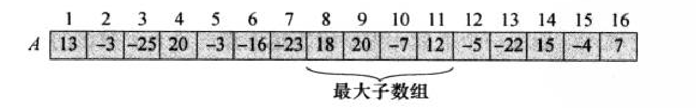
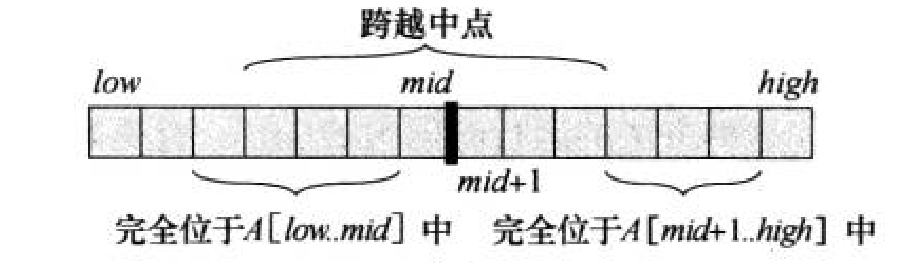
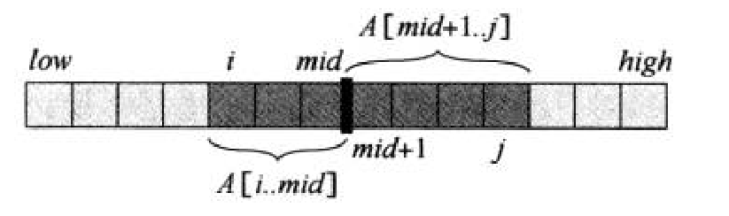
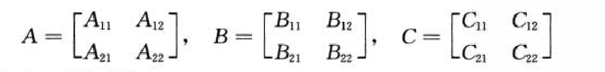
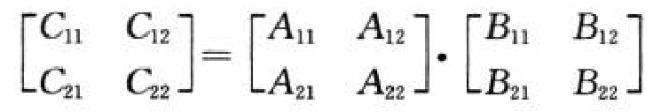
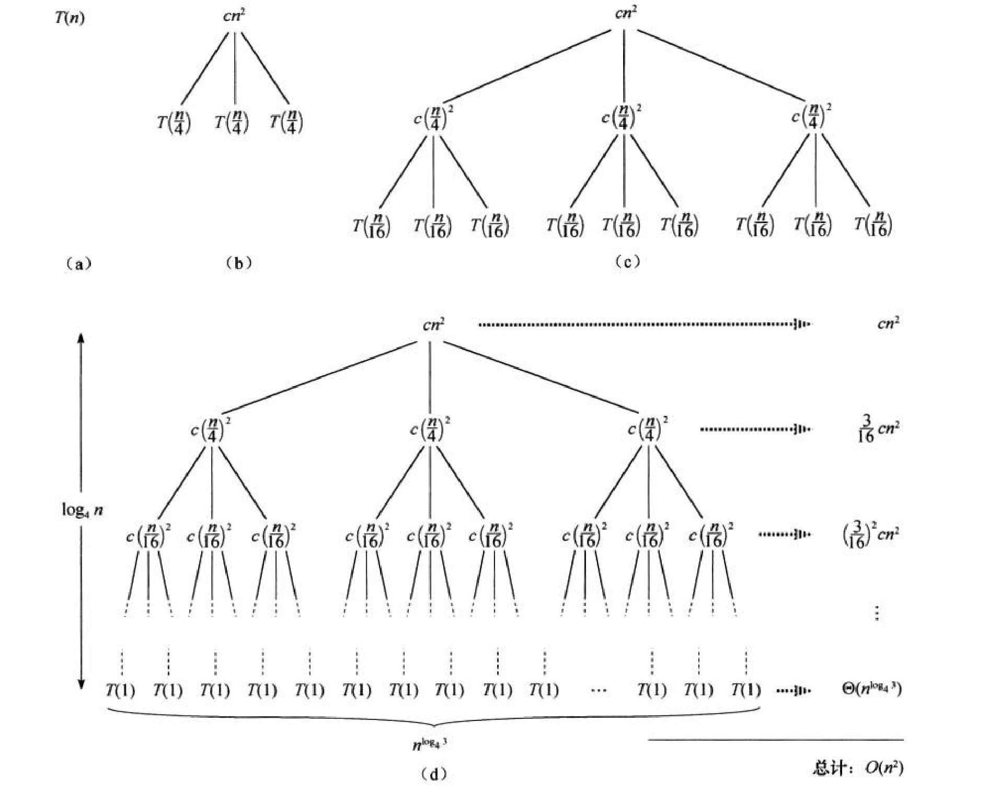
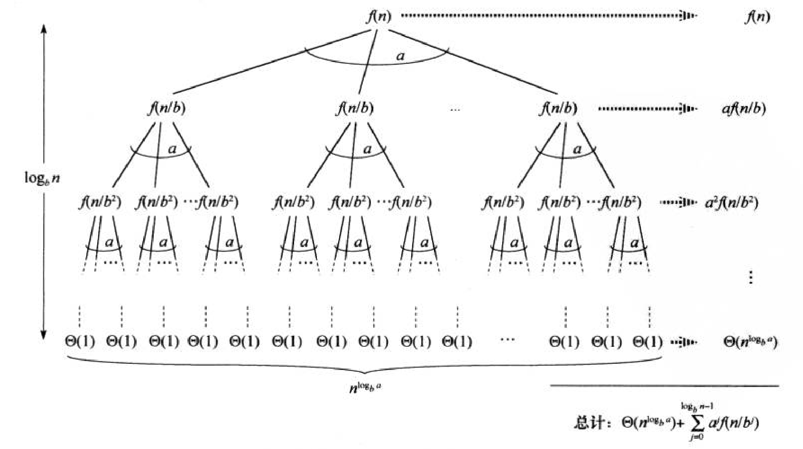

Chap.4 分治策略
4.1 最大子数组问题
问题概述：已知股票走势，求最大收益。
分治策略求解
数据处理：考察每日价格变化

问题思路：
考虑一个中点
共三种子数组（左右子数组，经过中间的子数组）

对左右子数组分别调用函数自身进行求解 ( T(n/2) )
对于经过中间的子数组

从中间开始往左右逐个相加 (最坏成本为 n )
复杂度分析：
T(n)=2T(n/2)+Θ(n)
* Kadane算法（4.1-5）
以下是我的实现
C++
1
2
3
4
5
6
7
8
9
10
11
12
13
14
15
16
17
18
19
20
21
22
23
24
25
26
27
28
29
30
31
32
33
34
35
| #include <iostream>
#include <vector>
int main(){
int n;
std::cin >> n;
std::vector<int> origin(n);
for (int i = 0; i < n; i++){
std::cin >> origin[i];
}
int min_price = origin[0];
int min_index = 0;
int sub = 0;
int p = 0;
int q = 0;
for (int i = 1; i < n; i++){
if (origin[i] < min_price){
min_price = origin[i];
min_index = i;
}
else if (origin[i] - min_price > sub){
sub = origin[i] - min_price;
p = min_index;
q = i;
}
}
std::cout << p << q << sub << std::endl;
return 0;
}
|
4.2 分块矩阵乘法
分块逻辑

计算逻辑
-
常规方法

-
Strassen方法：
第一步：计算7个中间矩阵（M1到M7）：
1
2
3
4
5
6
7
8
9
10
11
12
13
| M1=(A11+A22)(B11+B22)
M2=(A21+A22)B11
M3=A11(B12−B22)
M4=A22(B21−B11)
M5=(A11+A12)B22
M6=(A21−A11)(B11+B12)
M7=(A12−A22)(B21+B22)
|
第二步：组合出结果矩阵C：
1
2
3
4
5
6
7
| C11=M1+M4−M5+M7
C12=M3+M5
C21=M2+M4
C22=M1−M2+M3+M6
|
* 完成4.2-7，初步理解Strassen方法
递归式求解
4.3 代入法求解
-
猜测解的形式
-
使用归纳法证明
4.4 递归树求解
递归树：结点代表子问题的代价
递归式 T(n)=3T(⌊n/4⌋)+Θ(n2)

分析
- 第 0 层（根节点）：代价是 cn2。
- 第 1 层：有 3 个子节点，规模分别为 n/4，总代价是 3⋅c(n/4)2。
- 第 2 层：有 32 个子节点，规模分别为 n/42，总代价是 32⋅c(n/42)2。
- 第 i 层：有 3i 个子节点，总代价是 3i⋅c(n/4i)。
每个叶子结点的代价是 Θ(1)，每层结点数为 3i ( i 为深度 )，树高为 log4n
在最底层（叶子节点），共有 3log4n 个叶子，又
3log4n=nlog43
因此叶子节点的总代价为 Θ(nlog43)。
计算整棵树代价
T(n)=cn2+163cn2+(163)2cn2+⋯+(163)log4n−1cn2+Θ(nlog43)=i=0∑log4n−1(163)icn2+Θ(nlog43)<i=0∑∞(163)icn2+Θ(nlog43)=1−(3/16)1cn2+Θ(nlog43)=1316cn2+Θ(nlog43)=O(n2)
总结：画出递归树，每层代价相加
*子树代价不对称（例二）
4.5 主方法求解
对于以下形式的递归方程：
T(n)=aT(n/b)+f(n)
- n: 问题规模。
- a: 子问题的数量。
- n/b: 子问题的规模。
- f(n): 每次分解和合并的代价。
以 f(n) 和 nlogba 的大小关系为界，有三种情况
(nlogba ：递归树所有最底层节点的总代价)
情况 1：叶子节点占主导
若
∃ϵ>0,f(n)=O(nlogba−ϵ)
( f(n) 在多项式意义上小于 nlogba )
则
T(n)=Θ(nlogba)
情况 2：各层工作量均衡
若
f(n)=Θ(nlogba)
( f(n) 在多项式意义上等于 nlogba )
则
T(n)=Θ(nlogbalgn)
情况 3：根节点占主导
若
∃ϵ>0,f(n)=Ω(nlogba+ϵ)
( f(n) 在多项式意义上大于 nlogba )
则
T(n)=Θ(f(n))
* 4.6 主定理证明
4.6.1 特殊情况证明
先考虑 n=bj 的情况

利用递归树方法计算得
T(n)=j=0∑logbn−1ajf(n/bj)+Θ(nlogba)
既然 Θ(nlogba) 已经确定，那么研究 ∑j=0logbn−1ajf(n/bj)的大小
令
g(n)=j=0∑logbn−1ajf(n/bj)(4.22)
情况1
∃ϵ>0,f(n)=O(nlogba−ϵ)
将 f(n/bi)=O((n/bi)logba−ϵ) 代入公式4.22，得
g(n)=Oj=0∑logbn−1aj(bjn)logba−ϵ(4.23)
对于 O 内的求和式
j=0∑logbn−1aj(bjn)logba−ϵ=nlogba−ϵj=0∑logbn−1(blogbaabϵ)j=nlogba−ϵj=0∑logbn−1(bϵ)j=nlogba−ϵ(bϵ−1bϵlogbn−1)=nlogba−ϵ(bϵ−1nϵ−1)=nlogba−ϵO(nϵ) (b 和 ϵ 为常数)=O(nlogba)
代入4.23得 g(n)=O(nlogba)
T(n)=O(nlogba)+Θ(nlogba)=Θ(nlogba)
情况2
f(n)=Θ(nlogba)
将 f(n)=Θ(nlogba) 代入公式4.22，得
g(n)=Θj=0∑logbn−1aj(bjn)logba(4.24)
对于 Θ 内求和式
j=0∑logbn−1aj(bjn)logba=nlogbaj=0∑logbn−1(blogbaa)j=nlogbaj=0∑logbn−11=nlogbalogbn
代入公式4.24，得g(n)=Θ(nlogbalogbn)=Θ(nlogbalgn)
T(n)=Θ(nlogbalogbn)+Θ(nlogba)=Θ(nlogbalogbn)
情况3
∃ϵ>0,f(n)=Ω(nlogba+ϵ) 且当 n≥n0 时, ∃c<1,af(n/b)≤cf(n)
注：f(n)=Ω(nlogba+ϵ) 保证 f(n) 大致占主导地位
正则条件 af(n/b)≤cf(n)保证 n 足够大时， f(n) 每一项都占主导地位
g(n)=j=0∑logbn−1ajf(n/bj)≤j=0∑logbn−1cjf(n)+O(1)≤f(n)j=0∑∞cj+O(1)=f(n)(1−c1)+O(1)=O(f(n))(c 为常数)
注：n≤n0 时，不一定满足 af(n/b)≤cf(n)，但因为 n0 为常数，
且 n/bi<n0，所以用 O(1) 补齐差距
又 g(n)=Ω(f(n))，所以 g(n)=Θ(f(n))
注：g(n) 为所有非叶子结点代价的总和，显然是 Θ(f(n))
又 f(n)=Ω(nlogba+ϵ)
T(n)=Θ(f(n))+Θ(nlogba)=Θ(f(n))
一般情况证明
下面给出我的证明（批斗大会来）
T(n)=aT(⌈n/b⌉)+f(n)
对于任意给定的规模 n，我们总能找到一个整数 k，使得 n 被夹在两个相邻的 b 的幂之间
所以 bk≤n≤bk+1
构造子树和父树
- 子树 Tlower：问题规模为确切的幂 M=bk。显然 M≤n。你可以把它看作是被原始树完全包裹的最小完美树。
- 父树 Tupper：问题规模为确切的幂 N=bk+1。显然 N≥n。你可以把它看作是包裹住原始树的最大完美树。
T(M)≤T(n)≤T(N)
证明
因为 N=bk+1=b⋅M
所以 ∃c1,T(N)=c1T(M) 且 T(M)≤T(n)≤T(N)
注：以情况 1 为例：T(N)=Θ(Nlogba)=Θ((bM)logba)=Θ(blogba⋅Mlogba)=T(a⋅M)。所以存在常数 c1。
所以 ∃c2,T(n)=c2T(M)
则 T(n)=Θ(T(M))
对 T(M) 应用特殊情况证明即可